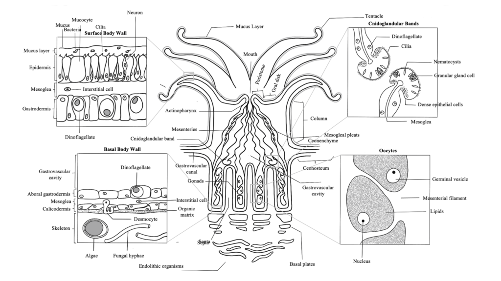
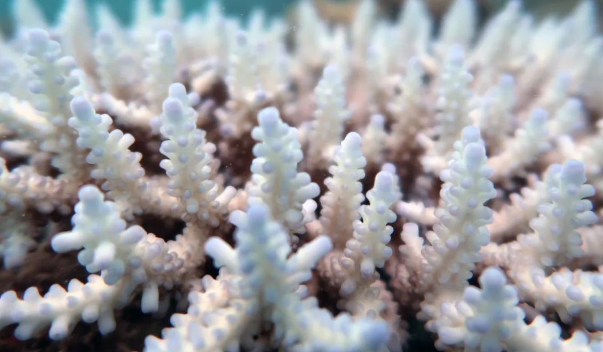
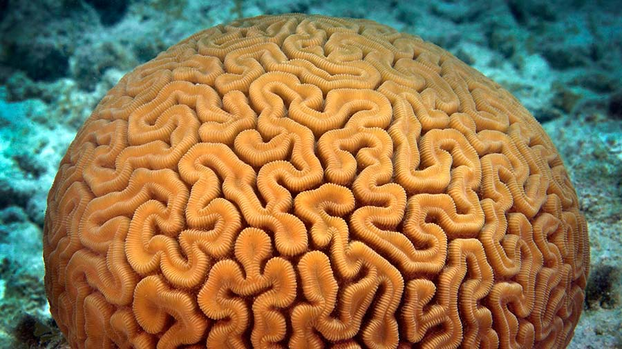
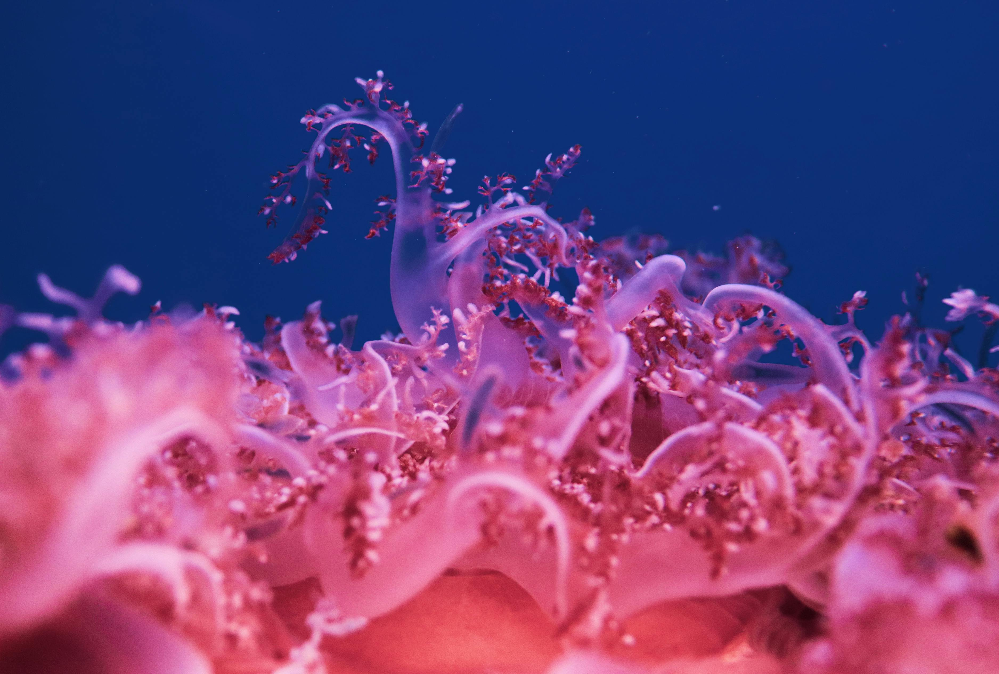
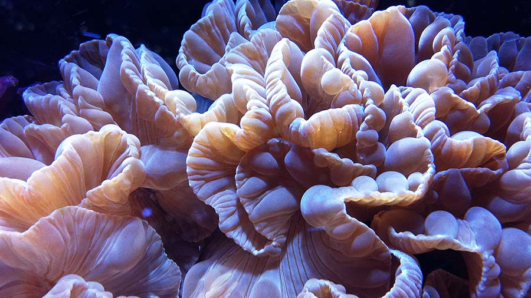

Corals
The Anthozoa class of marine invertebrates exists in Cnidaria phylum. The coral organism
maintains its habitat as compact colonies where each colony member resembles one another.
Organisms known as corals construct the extensive structure which supports the most
biodiverse marine ecosystem that exists on Earth.
Corals appear similar to plants but science proves them to be animal organisms. Every coral
polyp maintains a cylindrical shape with an oral disc containing a mouth protected by
tentacles around its edges. The polyps create protective hard skeletons through calcium
carbonate secretion which both covers and supports the colony structure.
Coral Anatomy & Growth
Understanding coral anatomy helps us appreciate these incredible marine creatures. Each coral polyp
is a small, cylindrical animal with a mouth surrounded by tentacles at one end. These tentacles
capture food and defend the polyp.

Detailed anatomy of a coral polyp showing its main structures
Symbiotic Relationships
Most reef-building corals contain photosynthetic algae called zooxanthellae in their tissues. This
remarkable symbiotic relationship is crucial for coral survival, as these algae provide the coral
with nutrients and oxygen while receiving shelter and compounds needed for photosynthesis.
Coral Growth Patterns
Coral growth forms vary widely based on species, location, and environmental conditions. Some common
growth forms include:
- Branching corals: Tree-like structures with multiple branches
- Boulder corals: Massive, rounded structures
- Table corals: Flat, plate-like formations
- Soft corals: Flexible structures without hard skeletons
Coral Reef Ecosystems
Coral reefs are among the most diverse ecosystems on Earth, often called the "rainforests of
the sea." Though they cover less than 1% of the ocean floor, they are home to more than 25%
of marine species. This incredible biodiversity makes coral reefs vital to marine ecology.
These ecosystems provide habitats for thousands of species, from microscopic organisms to
large predators. The complex three-dimensional structure of coral reefs offers numerous
niches for marine life to inhabit, which explains the remarkable diversity found in these
environments.
Ecological Importance
Coral reefs serve many important ecological functions:
- Providing habitat and shelter for marine organisms
- Serving as nursery grounds for juvenile fish
- Protecting coastlines from storm damage and erosion
- Supporting complex food webs and nutrient cycling
Did you know? A single acre of coral reef can produce up to 15 tons of fish and other seafood
each year!
Threats to Coral Reefs
Despite their ecological importance, coral reefs face numerous threats that have resulted in
significant decline worldwide. Understanding these threats is essential for developing effective
conservation strategies.

Coral bleaching occurs when corals expel their symbiotic algae due to stress
Climate Change
Rising ocean temperatures are causing more frequent and severe coral bleaching events. When water
temperatures rise above normal for extended periods, corals expel their symbiotic algae, turning
white and often dying if conditions don't improve quickly.
Ocean Acidification
As atmospheric CO2 levels rise, more CO2 dissolves in seawater, creating carbonic acid. This
increased acidity makes it difficult for corals to build their calcium carbonate skeletons, slowing
growth and weakening reef structures.
Human Activities
Direct human impacts include:
- Overfishing and destructive fishing practices
- Coastal development and pollution
- Physical damage from boats and reckless tourism
- Sedimentation from land-based sources
Conservation Efforts
Scientists and conservationists worldwide are working tirelessly to protect and restore coral
reef ecosystems. These efforts range from global policy initiatives to innovative local
solutions.
Marine Protected Areas (MPAs) have become a cornerstone of coral conservation. By restricting
harmful activities within these designated zones, corals can recover from damage and build
resilience to environmental stressors.
Restoration Techniques
Several innovative restoration approaches are showing promise:
- Coral gardening: Growing coral fragments in nurseries before transplanting to
degraded reefs
- Assisted evolution: Selective breeding of stress-resistant coral strains
- Artificial reefs: Creating structures that provide substrate for new coral
growth
- Biorock technology: Using low-voltage electricity to stimulate coral growth
Get Involved! There are many ways to contribute to coral conservation, from reducing your carbon
footprint to supporting marine conservation organizations.
Coral Photography
Capturing the beauty of corals presents unique challenges and rewards for underwater photographers.
The vibrant colors, intricate patterns, and diverse marine life make coral reefs a favorite subject
for both amateur and professional photographers.

Brain coral displaying intricate patterns

Soft corals swaying with the current

Staghorn coral providing habitat for small fish
Photography Tips
For those interested in photographing corals, here are some helpful tips:
- Use macro lenses for detailed close-ups of coral polyps
- Bring underwater lights to reveal true coral colors at depth
- Include fish or divers for scale and added interest
- Look for contrasting colors and unique formations
- Practice proper buoyancy to avoid damaging sensitive corals